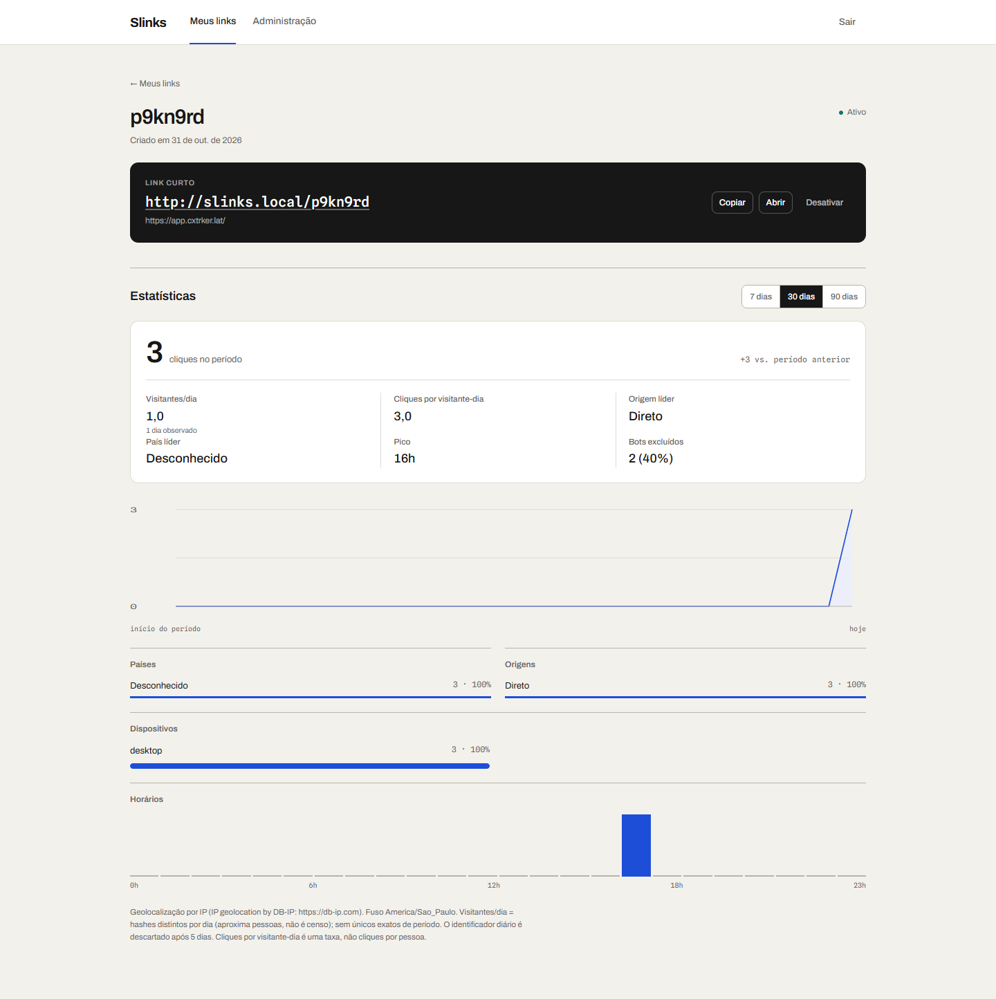

O problema
Quem compartilha link em Instagram, WhatsApp, e-mail ou anúncio precisa de duas coisas que raramente convivem no mesmo produto: uma forma rápida de encurtar e copiar, e números em que possa confiar depois.
A parte fácil é encurtar. A parte difícil é responder “esse resultado foi real?” quando o link recebeu tráfego de bots, quando o visitante veio de um app sem referrer, ou quando o fuso do workspace não é o fuso do navegador. A maioria dos encurtadores resolve isso do jeito mais confortável: soma tudo e mostra um número maior.
O que o produto faz
Meus links é a cara de encurtador: colar, encurtar, copiar. Sem dashboard no caminho. Detalhe do link é onde a medição aparece: cliques no período, visitantes por dia, série diária, países, origens, dispositivos, horários e a comparação com o período anterior — cada número com a definição da métrica ao lado.

Restrições que moldaram o desenho
- Fatia vertical, não plataforma. O escopo era provar o caminho inteiro — encurtar, redirecionar, medir, desativar — antes de acrescentar superfície.
- Single-tenant e admin-only. O MVP serve uma instância. Mas
linkseclick_eventsjá carregamworkspace_iddesde a primeira migration, porque nenhuma consulta de link ou estatística deve atravessar o workspace depois. - Nada de IP bruto. A decisão de privacidade veio antes da primeira tabela, não depois de um incidente.
Cinco decisões, com o trade-off de cada uma
1. O redirect não depende do analytics
O GET /:slug responde 302 com Cache-Control: no-store
— nunca 301, porque o destino pode mudar e o navegador não pode guardar a
decisão. A gravação do clique é best-effort: se falhar, o visitante ainda é redirecionado e a
perda é registrada. Link inexistente ou desativado responde 404; falha de banco
responde 503.
Trade-off: aceito perder evento para nunca perder o redirect. Um encurtador que falha em servir o link está quebrado; um que perde uma linha de telemetria está degradado — e o produto diz quando isso acontece.
2. Contrato antes da tela
O OpenAPI é gerado no build da API, versionado no repositório e convertido em cliente
fetch tipado mais schemas Zod pelo Orval. A SPA não declara tipo nenhum: ela
consome o mesmo contrato que o BFF valida em runtime. A CI roda git diff
--exit-code no api/openapi.json e no diretório gerado do BFF — se o
código gerado divergir do contrato, o build quebra.
Trade-off: mais uma etapa de geração e um artefato a manter versionado. Em troca, mudança de contrato vira erro de build em vez de erro de produção.
3. Visitantes são únicos por dia, não do período
A soma dos dias é o que aparece. O produto não afirma saber quantas pessoas diferentes passaram pelo link no mês, porque para isso precisaria reter um identificador estável do visitante por 30 dias. Bots aparecem no painel e são excluídos por padrão, com a participação deles no período. Geolocalização é estimativa por IP, com crédito à base DB-IP. O “hoje” é o fuso do workspace, não o do navegador.
Trade-off: números menores do que a concorrência costuma mostrar, e a obrigação de explicar cada métrica na tela.
4. Privacidade no desenho, não no rodapé
Não há IP nem User-Agent bruto persistido. O visitante é identificado por um HMAC com salt diário, e o salt é descartado depois de cinco dias — o que devolve a possibilidade de contar único por dia sem guardar quem é quem. A geolocalização é derivada no momento do clique. Os logs não carregam IP.
5. Segurança proporcional ao escopo
Token de serviço entre BFF e API, comparado em tempo constante. Sessão
HttpOnly e SameSite=Lax de 12 horas, CSRF double-submit, validação
de Origin exata, cookies Secure em produção e rate limit no BFF. O
navegador nunca fala com a API Java diretamente.
Como isso é testado
São 209 testes distribuídos onde cada camada tem risco próprio:
| Camada | Testes | O que cobre |
|---|---|---|
| API | 133 (175 casos) | Testcontainers com Postgres real: redirect, bot, geo, salt, fuso, período sem clique, desativação, falha de inserção. |
| BFF | 46 | Sessão, CSRF, Origin, rate limit, proxy, timeout e o contrato gerado. |
| SPA | 30 | Criação, cópia, timeout recuperável, detalhe, estatística e desativação. |
A API não usa banco falso: sobe Postgres de verdade em Testcontainers, porque as consultas de estatística são justamente a parte em que um mock mente. Os números de métrica têm casos específicos para fuso, bots, período sem cliques, dias observados e empates.
O que ficou de fora — de propósito
- Deploy público com Caddy, TLS e o compose da stack completa.
- A linha do período anterior sobreposta ao gráfico; hoje o delta aparece só no resumo.
- Papéis de analista e múltiplos usuários com autenticação própria.
- Testes E2E em navegador e medição de performance sob carga.
- Automação de download e proveniência da base DB-IP.
O que eu faria diferente
O BFF existe para o que o navegador precisa e a API não deve carregar. Na prática, ele acabou virando também o lugar de sessão e CSRF, o que é correto — mas custou uma camada a mais de teste e um contrato gerado a manter. Se o produto fosse só internamente consumido, eu teria começado sem BFF e movido essas responsabilidades para dentro da API.
A segunda coisa é o gráfico: hoje o delta do período anterior vive no resumo porque a sobreposição de série exigia mais tempo de eixo do que o escopo permitia. É o próximo incremento natural, não um esquecimento.
Stack
| API | Java 21, Spring Boot, JdbcClient, Flyway, Postgres 17, GeoIP2, springdoc |
| BFF | Node, Fastify 5, TypeScript, Pino, sessão + CSRF, Orval + Zod |
| SPA | React 19, Vite, React Router, TanStack Query |
| Qualidade | JUnit + Testcontainers, Vitest + Testing Library, GitHub Actions |
| Operação | Docker Compose para o Postgres; Caddy e TLS no plano de deploy |